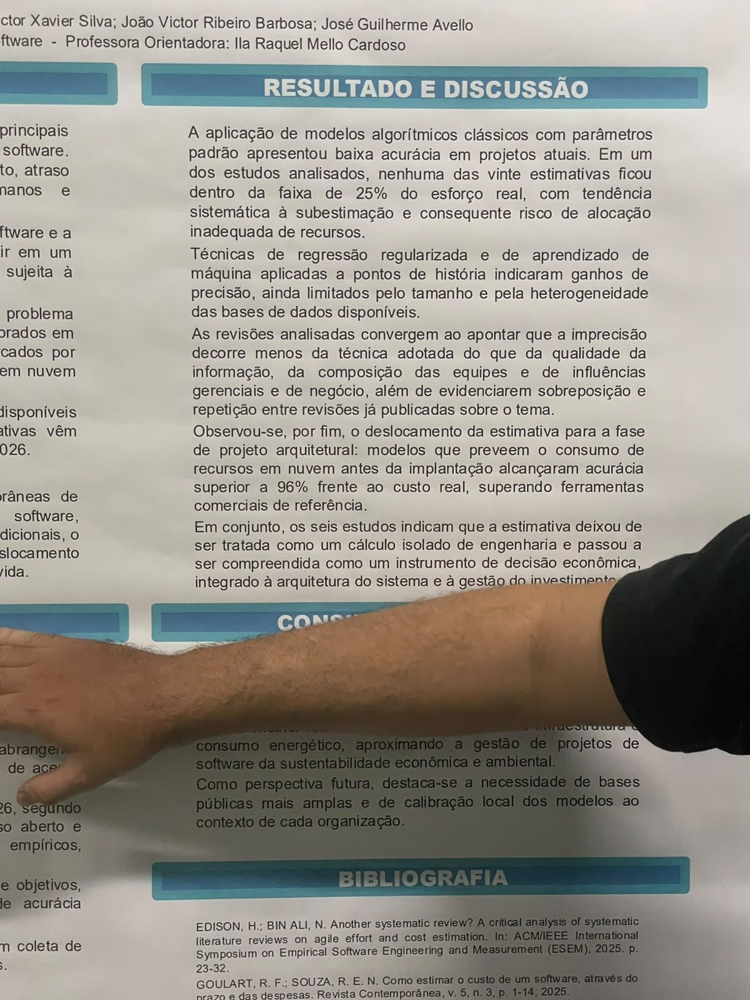

Errar a estimativa custa caro: revisão mostra como prever melhor o custo e o esforço de software
Cartaz compara modelos clássicos e abordagens baseadas em dados e aponta que estimar bem é uma decisão econômica, não só de engenharia
Por Pedro Henrique Mendonça Paz · · UniCatólica – Centro Universitário Católico do Tocantins

Objetivo do projeto
O estudo compara as abordagens atuais de estimativa de custo e esforço em projetos de software. A meta é identificar as limitações dos modelos algorítmicos tradicionais e avaliar o desempenho de técnicas baseadas em dados e aprendizado de máquina.
Os autores também querem mostrar como a análise econômica está se deslocando para as fases iniciais do ciclo de vida do projeto.
Problema a ser resolvido
Errar a estimativa de custo e esforço leva a estouro de orçamento, atraso no cronograma e desperdício de recursos humanos e computacionais. É um dos principais fatores de sucesso ou fracasso de um projeto de software.
Os modelos clássicos, consolidados desde a década de 1980, foram calibrados para contextos muito diferentes dos atuais, marcados por desenvolvimento ágil, entrega contínua e infraestrutura em nuvem de custo variável.
Área de atuação
O projeto está na Engenharia de Software e na Engenharia Econômica, com ligações com gestão de projetos, ciência de dados e planejamento financeiro de sistemas. O tema importa para qualquer organização que precisa decidir quanto investir, quantas pessoas alocar e quanto tempo levará para entregar uma solução.
Público-alvo
Esta leitura é interpretação do autor. O público provável são empresas de desenvolvimento de software, startups, equipes de engenharia, gerentes de projetos, analistas de custos e consultorias de tecnologia.
Em geral, são profissionais que precisam responder, ainda no começo do projeto, quanto vai custar e quanto tempo vai levar.
Possíveis partes interessadas
Desenvolvedores e gestores de projetos sentem o efeito direto de uma estimativa ruim. Clientes, diretores financeiros e investidores dependem dela para avaliar a viabilidade econômica.
Profissionais de infraestrutura em nuvem e empresas que contratam software também ganham: uma estimativa mais confiável ajuda a negociar prazos e distribuir recursos.
Estado do mercado e concorrentes
O trabalho é uma revisão científica, não um produto. Por isso, comparo suas ideias com ferramentas que já ajudam a estimar custos, esforço e cronogramas:
- AWS Pricing Calculator: simula o custo mensal de serviços em nuvem antes de contratá-los.
- Infracost: mostra a estimativa de custo de infraestrutura em nuvem durante a revisão de código.
- Jira: gestão ágil de projetos com pontos de história e relatórios de velocidade da equipe.
Diferencial
As ferramentas acima calculam, mas não explicam por que as estimativas falham. O diferencial do trabalho é olhar para a literatura recente e mostrar que a imprecisão vem menos da técnica e mais da qualidade da informação, da composição das equipes e de influências gerenciais.
Outro destaque é tratar a estimativa como instrumento de decisão econômica, ligada à arquitetura e ao investimento.
Tecnologias
O cartaz descreve uma pesquisa exclusivamente documental, sem coleta de dados primários nem participantes humanos, e não informa a criação de um software ou protótipo.
As técnicas estudadas incluem modelos algorítmicos clássicos, como o COCOMO, regressão regularizada, aprendizado de máquina sobre pontos de história e modelos de previsão de custos em nuvem.
Análise crítica do autor
Pontos fortes
O tema é central na Engenharia de Software e o cartaz é claro. A metodologia em quatro etapas e os critérios de seleção dos seis artigos dão credibilidade ao trabalho.
Pontos a melhorar
A amostra é pequena, com apenas seis artigos, e os próprios autores reconhecem a sobreposição entre revisões e o tamanho limitado das bases de dados. Não há coleta própria de dados.
Sugestão do autor para a equipe
Sugiro comparar na prática uma estimativa clássica com uma baseada em dados, usando o histórico de um projeto real de software, para ilustrar a diferença.
Equipe e autorização
Participaram do projeto:
- Kauã Ribeiro Mota
- João Victor Xavier Silva
- João Victor Ribeiro Barbosa
- José Guilherme Avello
- Orientadora: Ila Raquel Mello Cardoso
A equipe autorizou a divulgação desta matéria e das fotos, conforme o link de autorização entregue no AVA.
Galeria de fotos
